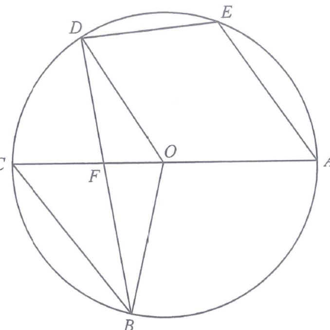

circle centre OAC diameter / BD chordBC, ODcentre OF, ∠CBFsector OBC
Question & Solution
13. In Figure 1, \(O\) is the centre of circle \(ABCDE\). \(AC\) is a diameter of the circle.
\(BD\) and \(OC\) intersect at the point \(F\). It is given that \(\angle AED = 115^\circ\).
(a) Find \(\angle CBF\). 3 marks
(b) Suppose that \(BC // OD\) and \(OB = 18\text{ cm}\). Is the perimeter of the sector \(OBC\) less than \(60\text{ cm}\)? Explain your answer. 5 marks

Figure (original exam diagram)
💡 Diagram hint: points \(A,B,C,D,E\) lie on the circle in that order, with \(AC\) as a diameter and \(B\) on the
major arc \(AC\). \(E\) is on the opposite side so that \(ABED\) is a cyclic quadrilateral — that is the key to part (a)!
Step 1 · Cyclic quadrilateral ABED
Opposite Angles of a Cyclic Quadrilateral\(\angle A+\angle C=180^\circ\)\(ABED\) is cyclic, so \(\angle ABF+\angle AED=180^\circ\) and \(\angle ABF=180^\circ-115^\circ=65^\circ\).
Since \(A,B,E,D\) all lie on the circle, \(ABED\) is a cyclic quadrilateral. Opposite angles of a cyclic
quadrilateral are supplementary, so \(\angle ABF + \angle AED = 180^\circ\).
The exterior angle of a cyclic quadrilateral equals the opposite interior angle — same result, faster.
Step 2 · Angle in a semicircle
Angle in a Semi-circle\(\angle ABC=90^\circ \text{ if } AC \text{ is a diameter}\)\(AC\) is a diameter, so \(\angle ABC=90^\circ\) and \(\angle CBF=90^\circ-65^\circ=25^\circ\).
\(AC\) is a diameter, so the angle in the semicircle is a right angle:
\[ \angle ABC = 90^\circ \]
And since \(F\) lies on \(BD\), the ray \(BF\) coincides with the ray \(BD\), so
\(\angle ABF\) and \(\angle CBF\) together make up \(\angle ABC\):
\[ \angle CBF + \angle ABF = 90^\circ \]
Step 3 · Answer to (a)
\[ \angle CBF = 90^\circ - 65^\circ = 25^\circ \]
(a) \(\angle CBF = 25^\circ\)
Step 4 · Angles in part (b)
Given \(BC // OD\), the alternate angle \(\angle ODF = \angle CBF = 25^\circ\).
Since \(OB = OD\) (radii), \(\triangle OBD\) is isosceles, so \(\angle OBF = \angle ODF = 25^\circ\).
Also, \(\angle DOF\) is the angle at the centre standing on the same arc \(CD\) as the angle
\(\angle CBF = 25^\circ\) at the circumference:
Arc Length\(\text{arc length}=\dfrac{\theta}{360^\circ}\times2\pi r\)The arc \(BC\) subtends \(80^\circ\) at the centre of a circle of radius \(18\) cm, so its length is \(8\pi\) cm.
Hence \(P > 60\), so the perimeter of sector \(OBC\) is not less than \(60\text{ cm}\).
(a) \(\angle CBF = 25^\circ\)
(b) \(P = 8\pi + 36 > 60\), so the perimeter is not less than \(60\text{ cm}\).
PRACTICESimilar question — try it yourself
Question. In the figure, \(A\), \(B\), \(C\), \(D\) and \(E\) lie on a circle with centre \(O\), where \(AC\) is a diameter. \(ABED\) is a cyclic quadrilateral with \(\angle AED=117^\circ\), and \(F\) lies on \(BD\). It is given that \(BC // OD\) and \(OB=OD=15\text{ cm}\). (a) Find \(\angle CBF\). (b) Find the perimeter of the sector \(OBC\) and explain whether it is less than \(48\text{ cm}\).
Show the worked solution
Step 1. (a) \(ABED\) is a cyclic quadrilateral, so \(\angle ABF+\angle AED=180^\circ\) and \(\angle ABF=180^\circ-117^\circ=63^\circ\).
Step 2. \(AC\) is a diameter, so \(\angle ABC=90^\circ\); hence \(\angle CBF=90^\circ-63^\circ=27^\circ\).